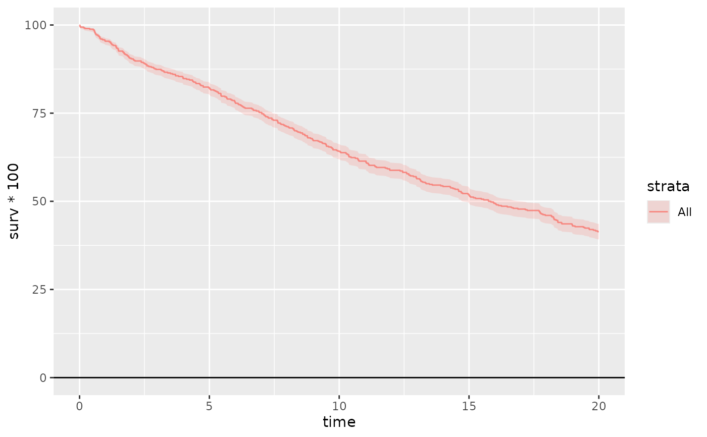
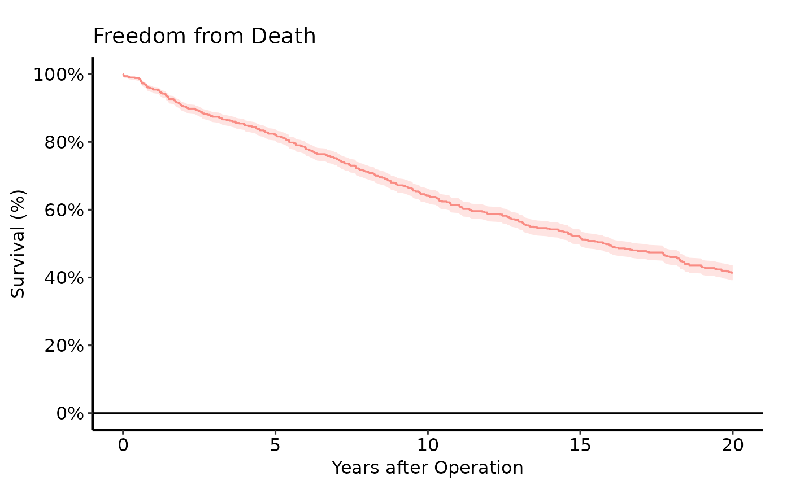
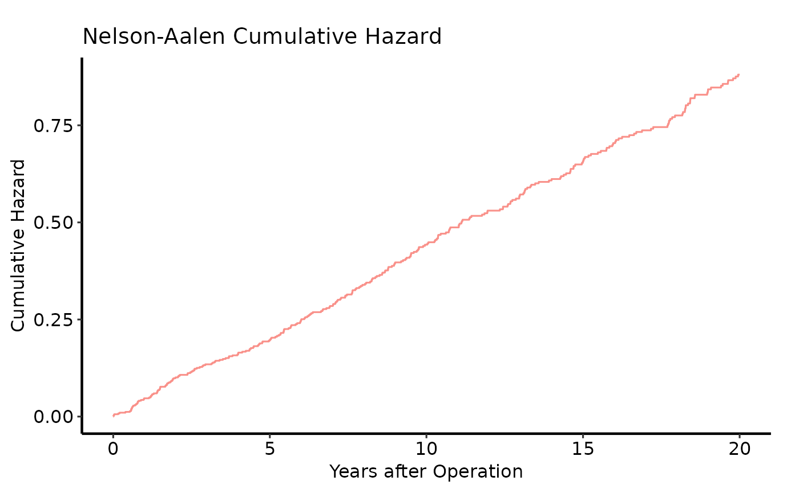

Estimates a Kaplan-Meier survival function and returns a single bare
ggplot object corresponding to the selected plot_type.
All five plot variants and the KM data, risk table, and report table are
attached as attributes (see attr(result, "km_data")).
The returned plot intentionally omits scale, label, and theme modifications
so the caller can layer on their own choices with +.
Arguments
- data
A data frame.
- time_col
Name of the numeric column holding follow-up time in years. Defaults to
"iv_dead".- event_col
Name of the logical or 0/1 column indicating whether the event occurred. Defaults to
"dead".- group_col
Optional name of a character or factor column used to stratify the analysis. Pass
NULL(the default) for an unstratified estimate.- strata_col
Deprecated. Use
group_colinstead. If supplied andgroup_colisNULL,strata_colis used with a deprecation warning.- plot_type
Character; which plot variant to return as the primary ggplot object. One of
"survival"(default),"cumhaz","hazard","loglog", or"life".- conf_int
Logical; draw a confidence-interval ribbon on the survival plot. Defaults to
TRUE.- conf_level
Confidence level for the CI band. Defaults to
0.95.- report_times
Numeric vector of time points at which survival estimates and numbers at risk are reported. Defaults to
c(1, 5, 10, 15, 20, 25).- alpha
Transparency of plot lines and points, in [0, 1]. Default
0.8. The CI ribbon uses a fixed transparency of0.2.- method
Estimator to use.
"kaplan-meier"(default) computes the product-limit estimate with a logit CI — corresponding to the SAS%kaplanmacro."nelson-aalen"uses the Fleming-Harrington cumulative hazard \(H(t) = \sum d_i / n_i\) with \(S(t) = \exp(-H)\) and a log CI on \(H(t)\) — corresponding to the SAS%nelsontmacro, which is preferred when \(S(t)\) falls to or near zero.
Value
A ggplot2::ggplot() object for the selected plot_type.
All five plot variants and the KM data, risk table, and report table are
attached as attributes (see attr(result, "km_data")):
attr(p, "survival_plot")(
PLOTS=1) Bareggplot: KM step function with optional CI ribbon, y-axis on 0–100 scale.attr(p, "cumhaz_plot")(
PLOTC=1) Bareggplot: Nelson-Aalen cumulative hazard H(t) = -log S(t).attr(p, "hazard_plot")(
PLOTH=1) Bareggplot: instantaneous hazard h(t) = log(S(t_prev)/S(t)) / delta_t, plotted at interval midpoints. Addgeom_smooth(method="loess")for a smoothed hazard curve.attr(p, "loglog_plot")(
PLOTC=1, log-log variant) Bareggplot: log H(t) vs log t. Parallel lines across strata indicate proportional hazards.attr(p, "life_plot")(
PLOTL=1) Bareggplot: restricted mean survival time (integral of S(t)) vs time.attr(p, "km_data")Tidy data frame with columns
time,surv,lower,upper,n.risk,n.event,n.censor,cumhaz,strata,hazard,density,mid_time,life,proplife,log_cumhaz,log_time.attr(p, "risk_table")Data frame:
strata,report_time,n.risk.attr(p, "report_table")Data frame:
strata,report_time,surv,lower,upper,n.risk,n.event.
References
SAS template: tp.ac.dead.sas (calls %kaplan for
product-limit survival estimates and %nelsont for Nelson-Aalen
cumulative event estimates).
Examples
# --- Unstratified ---
dta <- sample_survival_data(n = 500, seed = 42)
p <- survival_curve(dta, alpha = 0.8)
# Bare survival plot — compose directly with +
p + hvti_theme("manuscript")

# Add scales, labels, theme
p +
ggplot2::scale_y_continuous(breaks = seq(0, 100, 20),
labels = function(x) paste0(x, "%")) +
ggplot2::scale_x_continuous(breaks = seq(0, 20, 5)) +
ggplot2::coord_cartesian(xlim = c(0, 20), ylim = c(0, 100)) +
ggplot2::labs(x = "Years after Operation", y = "Survival (%)",
title = "Freedom from Death") +
hvti_theme("manuscript")
#> Scale for y is already present.
#> Adding another scale for y, which will replace the existing scale.

# Access the report table via attr()
attr(p, "report_table")
#> strata report_time surv lower upper n.risk n.event
#> 1 All 1 0.954 0.9317320 0.9692443 478 1
#> 2 All 5 0.822 0.7859710 0.8530976 412 1
#> 3 All 10 0.642 0.5989814 0.6828473 322 1
#> 4 All 15 0.518 0.4741762 0.5615486 260 1
#> 5 All 20 0.414 0.3715880 0.4577269 207 0
#> 6 All 25 0.414 0.3715880 0.4577269 207 0
# Numbers at risk
attr(p, "risk_table")
#> strata report_time n.risk
#> 1 All 1 478
#> 2 All 5 412
#> 3 All 10 322
#> 4 All 15 260
#> 5 All 20 207
#> 6 All 25 207
# Cumulative hazard (select a different plot_type)
survival_curve(dta, plot_type = "cumhaz") +
ggplot2::scale_x_continuous(breaks = seq(0, 20, 5)) +
ggplot2::labs(x = "Years after Operation", y = "Cumulative Hazard",
title = "Nelson-Aalen Cumulative Hazard") +
hvti_theme("manuscript")

# --- Stratified ---
# supply strata_levels to sample_survival_data() to generate the
# "valve_type" column used by group_col below.
# dta_s <- sample_survival_data(
# n = 500,
# strata_levels = c("Type A", "Type B"), # adds valve_type column
# hazard_ratios = c(1, 1.4),
# seed = 42
# )
# p_s <- survival_curve(dta_s, group_col = "valve_type", alpha = 0.8)
#
# p_s +
# ggplot2::scale_color_manual(
# values = c("Type A" = "blue", "Type B" = "red"),
# name = "Valve Type"
# ) +
# ggplot2::scale_fill_manual(
# values = c("Type A" = "blue", "Type B" = "red"),
# name = "Valve Type"
# ) +
# ggplot2::scale_x_continuous(breaks = seq(0, 20, 5)) +
# ggplot2::coord_cartesian(xlim = c(0, 20), ylim = c(0, 100)) +
# ggplot2::labs(x = "Years after Operation", y = "Survival (%)",
# title = "Freedom from Death by Valve Type") +
# hvti_theme("manuscript")
#
# --- Hazard rate plot (PLOTH=1; add smoother for publication) ---
# survival_curve(dta, plot_type = "hazard") +
# ggplot2::geom_smooth(ggplot2::aes(x = mid_time, y = hazard,
# color = strata),
# method = "loess", se = FALSE, span = 0.5) +
# ggplot2::scale_x_continuous(breaks = seq(0, 20, 5)) +
# ggplot2::labs(x = "Years after Operation",
# y = "Instantaneous Hazard") +
# hvti_theme("manuscript")
#
# --- Log-log plot (PLOTC log-log; proportional-hazards check) ---
# survival_curve(dta, plot_type = "loglog") +
# ggplot2::labs(x = "log(Years)", y = "log(-log S(t))",
# title = "Log-Log Survival (PH Assumption Check)") +
# hvti_theme("manuscript")
#
# --- Integrated survivorship / restricted mean survival (PLOTL=1) ---
# survival_curve(dta, plot_type = "life") +
# ggplot2::scale_x_continuous(breaks = seq(0, 20, 5)) +
# ggplot2::labs(x = "Years after Operation",
# y = "Restricted Mean Survival (years)") +
# hvti_theme("manuscript")
#
# --- Nelson-Aalen (use when S(t) falls to zero; mirrors SAS %nelsont) ---
# p_na <- survival_curve(dta, alpha = 0.8, method = "nelson-aalen")
# p_na +
# ggplot2::scale_color_manual(values = c(All = "steelblue"), guide = "none") +
# ggplot2::scale_fill_manual(values = c(All = "steelblue"), guide = "none") +
# ggplot2::scale_y_continuous(breaks = seq(0, 100, 20),
# labels = function(x) paste0(x, "%")) +
# ggplot2::scale_x_continuous(breaks = seq(0, 20, 5)) +
# ggplot2::coord_cartesian(xlim = c(0, 20), ylim = c(0, 100)) +
# ggplot2::labs(x = "Years after Operation", y = "Survival (%)",
# title = "Freedom from Death (Nelson-Aalen)") +
# hvti_theme("manuscript")
#
# --- Save ---
# ggplot2::ggsave("survival_curve.pdf", p, width = 8, height = 6)